演習 · R ビジュアライゼーション
過去の期末試験「環境ビジュアライゼーション」(2025年1月実施)を自習用に再構成した演習です。架空の火山災害対応を軸に、地図(ggmap)・統計グラフ(ggplot2)・3D地形(rgl)・画像アノテーション・ダークテーマまで、7つのシナリオを通しで練習できます。各シナリオの解答例は折りたたんであります。まず自力でコードを書き、出力例と見比べてから開いてください。原本の試験問題にあった不備は修正済みです(修正内容)。
全シナリオのデータは1つの RData に同封
# 描画デバイスと環境の初期化
if( dev.cur() > 1 ) dev.off()
rm( list = ls( envir = globalenv() ), envir = globalenv() )
# 使用パッケージ（無ければ自動インストール）
targetPackages <- c("tidyverse", "ggmap", "RgoogleMaps", "rgl")
newPackages <- targetPackages[!(targetPackages %in% installed.packages()[,"Package"])]
if(length(newPackages)) install.packages(newPackages, repos = "https://cloud.r-project.org")
for(package in targetPackages) library(package, character.only = TRUE)
# 演習データの読み込み（15個の変数がロードされる）
load("exam_data.RData")使用する変数:eq_p / 使用パッケージ:ggmap
過去数年において検出されたことのない異常なパターンの微弱な地震が各地で観測された。状況分析のため、まず震源を特定することとなった。過去3時間以内の観測地点(経度・緯度)が eq_p に保存されている。
■ 設問
register_google(key = "YOUR_API_KEY")
tkmap <- qmap("tokyo", zoom = 8, maptype = "roadmap")
p <- geom_point(data = eq_p, aes(x = Longitude, y = Latitude))
d <- geom_density_2d(data = eq_p, aes(x = Longitude, y = Latitude))
S1 <- tkmap + p + d
print(S1)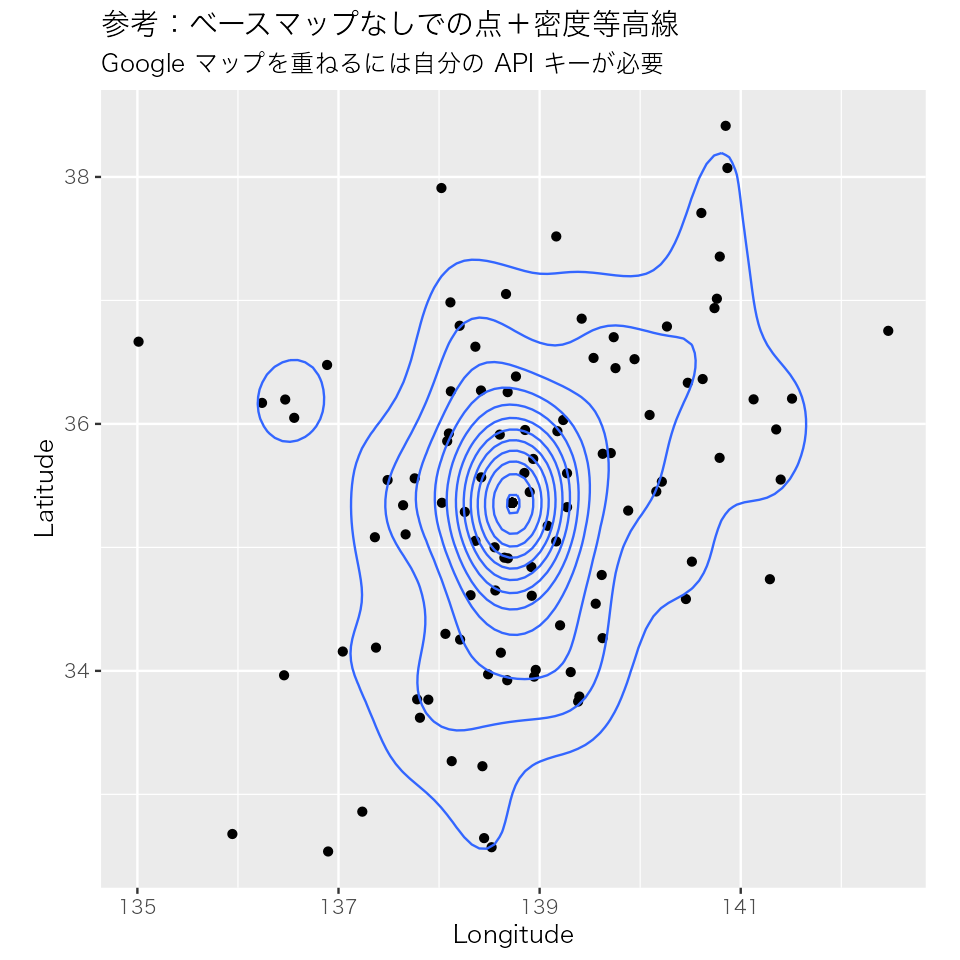
使用する変数:report_data
この地震の揺れのパターンから、地震の原因を判別する。観測された揺れの周期性の分布を、過去に報告されている火山性の地震と、そうでない地震の周期と照らし合わせる。report_data の各列は以下の通り。
■ 設問
S2 <- ggplot(data = report_data) +
geom_histogram(aes(x = normal), boundary = 0, binwidth = 1,
color = rgb(0, 0, 1), fill = rgb(0, 0, 1, alpha = 0.2)) +
geom_histogram(aes(x = eruption), boundary = 0, binwidth = 1,
color = rgb(1, 0, 0), fill = rgb(1, 0, 0, alpha = 0.2)) +
geom_histogram(aes(x = report), boundary = 0, binwidth = 1,
color = rgb(0, 0, 0), fill = rgb(0, 0, 0, alpha = 0.4)) +
xlab("Hz")
print(S2)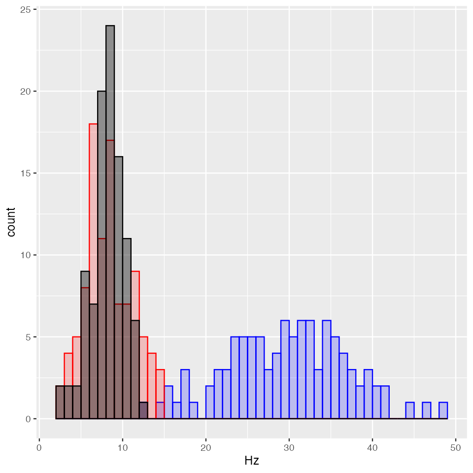
使用する変数:survivor, elev_layer, heat_map, rescue_point
火山性の地震と判断され、直に警報が発せられた。その後、実際に噴火が起こり、各地に被害をもたらした。噴火した山においては、7名の登山客が登山中であり、シェルターに一時退避していた。噴火は一旦沈静化したものの、今後さらに大きな噴火が起こることが予想されており、これらの生存者に対して、急ぎ救難活動が開始された。
生存者一行は下山を開始し迷走を見せつつも、麓へと移動しており、断続的に携帯電話を介して GPS 位置情報が報告されている。この GPS 位置情報は survivor に保存されている。
また、当該山地のおおまかな地形情報が、等高線マップの ggplot レイヤーとして elev_layer[[1]] に保存されている(リストの1番目の要素を使う)。
ggplot() + elev_layer[[1]] + coord_fixed()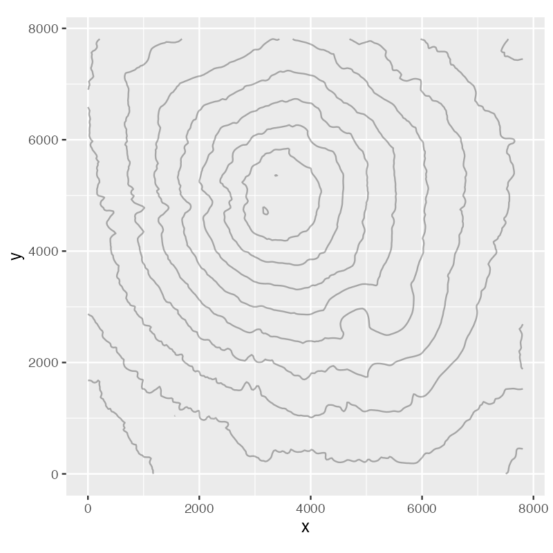
さらに、人工衛星の赤外線撮影により当該地域の最新の熱分布情報 heat_map(x, y, z=温度℃)が得られている。これらの情報をもとに策定された救助予定地点が rescue_point に保存されている。
■ 設問
S3 <- ggplot() +
geom_tile(aes(x = x, y = y, fill = z), data = heat_map, alpha = 0.9) +
scale_fill_gradient(low = "red", high = "white") +
elev_layer[[1]] + coord_fixed() +
geom_path(data = survivor, aes(x = x, y = y)) +
annotate("point", x = rescue_point$x, y = rescue_point$y)
print(S3)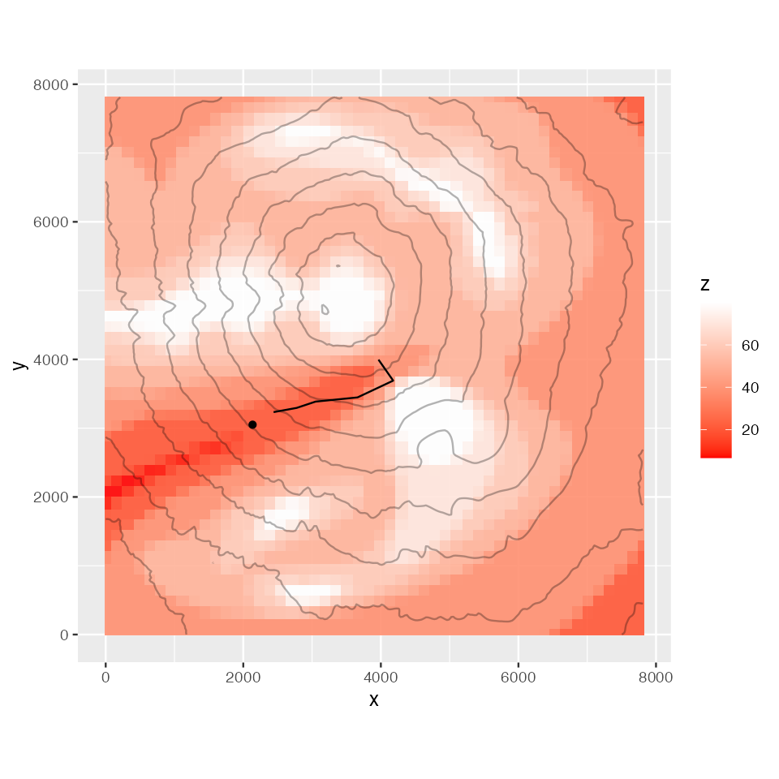
使用する変数:mt.x, mt.y, mt.z, survivor, rescue_point / 使用パッケージ:rgl
救難活動はヘリコプターを中心として実行されることとなった。作戦には輸送ヘリ CH47・救難ヘリ UH60・捜索機 U125・無人偵察機 RQ4 が投入される(下は作戦シミュレーションのブリーフィング画面。これも R + rgl だけで描かれている)。
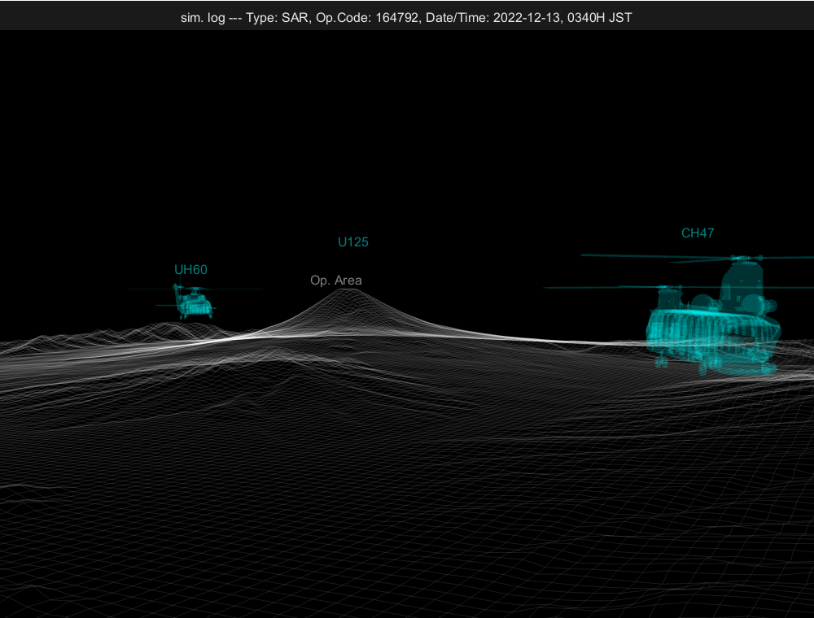
出題範囲外のおまけです。ポイントは3つ:①readOBJ() で市販の3Dモデル(.obj)を読み込み、scale3d / rotate3d / translate3d で実寸に合わせて配置できる。②地形は国土地理院の標高タイルを URL から直接読んで persp3d() でワイヤーフレーム化している。③layout3d() で上部のログ表示行と3Dシーンを分割し、rgl.camera()(rglplus)で視点を機体脇に置いている。機体の .obj ファイルは配布モデルの権利関係のため公開リポジトリには含めていません(研究室内は Rsample/temp/ にあり)。
library(rgl); library(rglplus)
# ── 機体モデルの読み込みと実寸合わせ（.obj は研究室の Rsample/temp/ に）
base_ch47 <- readOBJ("temp/CH47_3.obj", material = list(color = "gray",
shininess = 0, speculer = 0, lit = FALSE))
base_ch47 <- scale3d(base_ch47, 5.6/50.10444, 5.6/50.10444, 5.6/50.10444)
base_ch47 <- rotate3d(base_ch47, -pi/2, 1, 0, 0)
base_uh60 <- readOBJ("temp/uh60.obj", material = list(color = "gray",
shininess = 0, speculer = 0, lit = FALSE))
base_uh60 <- scale3d(base_uh60, 19.76/186.1887, 19.76/186.1887, 19.76/186.1887)
base_uh60 <- rotate3d(base_uh60, -pi/2, 1, 0, 0)
base_uh60 <- rotate3d(base_uh60, pi, 0, 0, 1)
base_u125 <- readOBJ("temp/U-125.obj", material = list(color = "gray",
shininess = 0, speculer = 0, lit = FALSE))
base_u125 <- rotate3d(base_u125, -pi/2, 1, 0, 0)
base_u125 <- rotate3d(base_u125, -pi/2, 0, 0, 1)
base_rq4 <- readOBJ("temp/RQ-4.obj", material = list(color = "gray",
shininess = 0, speculer = 0, lit = FALSE))
base_rq4 <- rotate3d(base_rq4, -pi/2, 1, 0, 0)
# ── 地形：国土地理院の標高タイル（富士山周辺）を直接読む
widemap <- read.table("http://cyberjapandata.gsi.go.jp/xyz/dem/9/453/202.txt", sep = ",")
widemap <- as.matrix(widemap)
rwidemap <- t(apply(widemap, 2, rev))
map_meter_size <- 7809.34
wide.x <- seq(0, map_meter_size*8, length = nrow(rwidemap))
wide.y <- seq(0, map_meter_size*8, length = ncol(rwidemap))
wide.z <- rwidemap
# ── 回転中心を指定位置に固定するための補助関数
setPivotPoint <- function(pivotpoint){
bbox <- par3d("bbox")
rglsize <- c(max(abs(bbox[1]-pivotpoint[1]), abs(bbox[2]-pivotpoint[1])),
max(abs(bbox[3]-pivotpoint[2]), abs(bbox[4]-pivotpoint[2])),
max(abs(bbox[5]-pivotpoint[3]), abs(bbox[6]-pivotpoint[3])))
corners <- as.data.frame(rbind(pivotpoint+c(rglsize[1],0,0),
pivotpoint+c(-rglsize[1],0,0),
pivotpoint+c(0,rglsize[2],0),
pivotpoint+c(0,-rglsize[2],0),
pivotpoint+c(0,0,rglsize[3]),
pivotpoint+c(0,0,-rglsize[3])))
points3d(corners, alpha = 0) # 透明な点でバウンディングボックスを対称化
}
pivotpoint <- c(40000, 20000, 2500)
# ── シーン構築：上段にログ表示、下段に3Dシーン
close3d()
open3d(windowRect = c(0, 0, 1000, 760))
layout3d(matrix(1:2, 2, 1), heights = c(0.4, 8))
bg3d(sphere = FALSE, fogtype = "none", color = hsv(0, 0, 0.1),
back = "lines", fogScale = 1)
text3d(0, 0, 0, "sim. log --- Type: SAR, Op.Code: 164792, Date/Time: 2022-12-13, 0340H JST",
col = hsv(0, 0, 1), alpha = 0.9)
next3d()
persp3d(wide.x, wide.y, wide.z, col = "white", alpha = 0.1,
front = "lines", back = "lines",
lit = FALSE, axes = FALSE, xlab = "", ylab = "", zlab = "")
par3d(scale = c(1, 1, 1))
bg3d(sphere = FALSE, fogtype = "none", color = c("black", "black"),
back = "lines", fogScale = 1)
# ── 各機体の向き・縮尺・配置
ch47 <- rotate3d(base_ch47, -pi/6, 0, 0, 1)
uh60 <- rotate3d(base_uh60, -pi/6, 0, 0, 1)
u125 <- rotate3d(base_u125, -pi/3, 0, 0, 1)
u125 <- rotate3d(u125, pi/10, 0, 1, 0)
rq4 <- base_rq4
ch47 <- scale3d(ch47, 100, 100, 100)
uh60 <- scale3d(uh60, 100, 100, 100)
u125 <- scale3d(u125, 5, 5, 5)
rq4 <- scale3d(rq4, 5, 5, 5)
loc_Fuji <- c(30/100*map_meter_size*8, 82/100*map_meter_size*8, 3778)
loc_cam <- c(pivotpoint[1]+3500, pivotpoint[2]-6300, pivotpoint[3]+100)
loc_UH60 <- c(pivotpoint[1]-4000, pivotpoint[2]+2000, pivotpoint[3])
loc_CH47 <- c(pivotpoint[1]+2500, pivotpoint[2]-1500, pivotpoint[3])
loc_U125 <- loc_Fuji + c(1000, 0, 2000)
loc_RQ4 <- loc_Fuji + c(0, 1000, 18000)
ch47 <- translate3d(ch47, loc_CH47[1], loc_CH47[2], loc_CH47[3])
uh60 <- translate3d(uh60, loc_UH60[1], loc_UH60[2], loc_UH60[3])
u125 <- translate3d(u125, loc_U125[1], loc_U125[2], loc_U125[3])
rq4 <- translate3d(rq4, loc_RQ4[1], loc_RQ4[2], loc_RQ4[3])
shade3d(ch47, col = hsv(0.5, 1, 1), alpha = 0.1)
shade3d(uh60, col = hsv(0.5, 1, 1), alpha = 0.1)
shade3d(u125, col = hsv(0.5, 1, 1), alpha = 0.1)
shade3d(rq4, col = hsv(0.5, 1, 1), alpha = 0.1)
texts3d(loc_CH47 + c(0, 0, 500), texts = "CH47", col = hsv(0.5, 1, 1), alpha = 0.5)
texts3d(loc_UH60 + c(0, 0, 600), texts = "UH60", col = hsv(0.5, 1, 1), alpha = 0.5)
texts3d(loc_U125 + c(0, 0, 200), texts = "U125", col = hsv(0.5, 1, 1), alpha = 0.5)
texts3d(loc_RQ4 + c(0, 0, 200), texts = "RQ4", col = hsv(0.5, 1, 1), alpha = 0.5)
texts3d(loc_Fuji + c(0, 0, 400), texts = "Op. Area", col = "white", alpha = 0.5)
# ── 回転中心とカメラ（rglplus）
setPivotPoint(pivotpoint)
rgl.camera(loc_cam, fov = 35)救難ヘリに先行して、現場上空に捜索機が到着し、詳細な地形情報の収集がなされた。地形情報は水平x軸座標が mt.x、水平y軸座標が mt.y、鉛直z軸座標が mt.z に保存されている。この地形情報を三次元マップにし、さらに生存者の位置などの情報を統合して可視化し、後に続く救難ヘリのディスプレイに表示してパイロットを補助する。夜間飛行中であることを踏まえ、パイロットの目への負担の少ないレイアウトにする。
■ 設問
open3d()
persp3d(mt.x, mt.y, as.vector(mt.z), col = hsv(0.5, 0.5, 1), alpha = 0.4,
front = "lines", back = "lines", # ワイヤーフレーム表示
lit = FALSE, axes = FALSE, xlab = "", ylab = "", zlab = "")
par3d(scale = c(1, 1, 1))
bg3d(sphere = FALSE, fogtype = "none", color = c("black", "white"),
back = "lines", fogScale = 1)
# 生存者の経路（点＋線＋時刻テキスト）
points3d(survivor$x, survivor$y, survivor$z, size = 10, col = "pink")
lines3d(survivor$x, survivor$y, survivor$z, col = "pink")
texts3d(survivor$x, survivor$y, survivor$z + 100, texts = survivor$t,
col = "white", alpha = 0.9)
# 救助予定地点（rescue_point$t に "LZ ETA 04:30" が格納済み）
points3d(rescue_point$x, rescue_point$y, rescue_point$z,
size = 20, col = "orange", alpha = 0.9)
texts3d(rescue_point$x, rescue_point$y + 10, rescue_point$z + 100,
texts = rescue_point$t, col = "white", alpha = 0.9)
# 視点の調整（マウスでも回せる）
view3d(theta = 0, phi = -70, zoom = 0.3, scale = par3d("scale"), interactive = TRUE)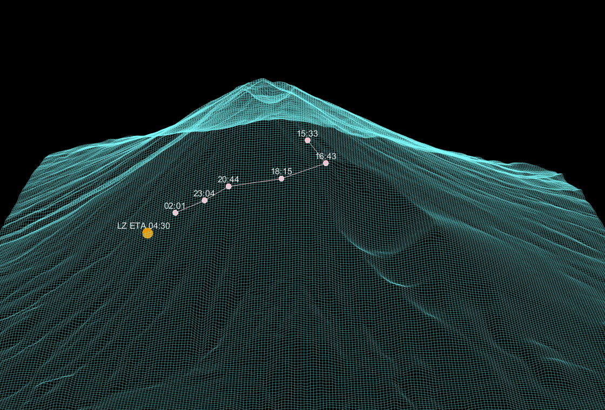
使用する変数:pic_all, roi_pt, pic_zoom, tracked_tgt
〈シナリオ A〉 救難ヘリが現場に近づき、赤外線監視装置で捜索が開始された。赤外線監視装置による広域画像に適切なアノテーションを施し、捜索員による捜索作業を補助する。当該画像は pic_all に保存されている(ggplot オブジェクトなので、そのまま実行すると表示され、レイヤーを + で追加できる)。
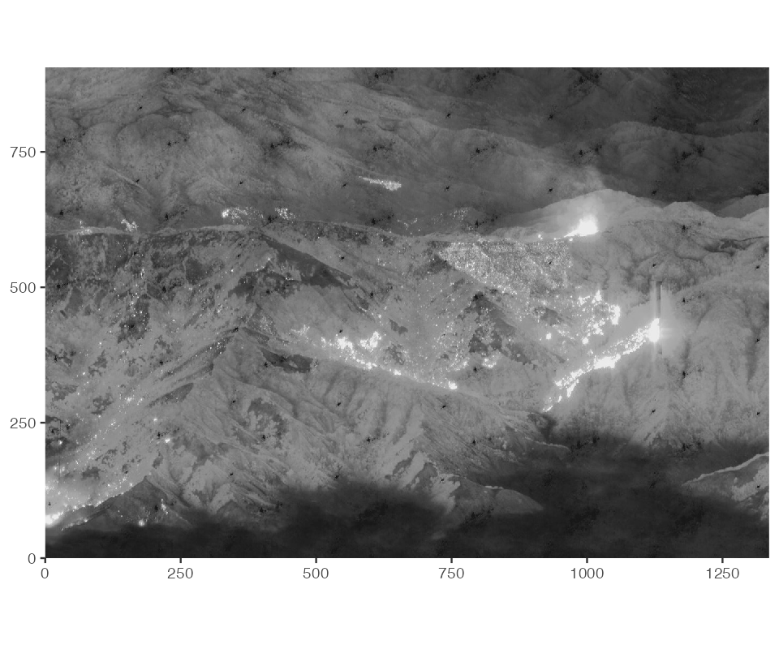
この広域画像において、生存者の GPS 座標をもとにスキャン範囲を絞ることとした。ズーム範囲は矩形の対角2点の画像中座標として与えられ、roi_pt(2行×2列:1行目が左下、2行目が右上)に保存されている。
■ 設問
roi <- annotate("rect",
xmin = roi_pt$x[1], ymin = roi_pt$y[1],
xmax = roi_pt$x[2], ymax = roi_pt$y[2],
col = "green", fill = NA)
tx <- annotate("text", x = roi_pt$x[1], y = roi_pt$y[1] + 60,
col = "green", label = "ROI")
S5A <- pic_all + roi + tx + labs(x = NULL, y = NULL)
print(S5A)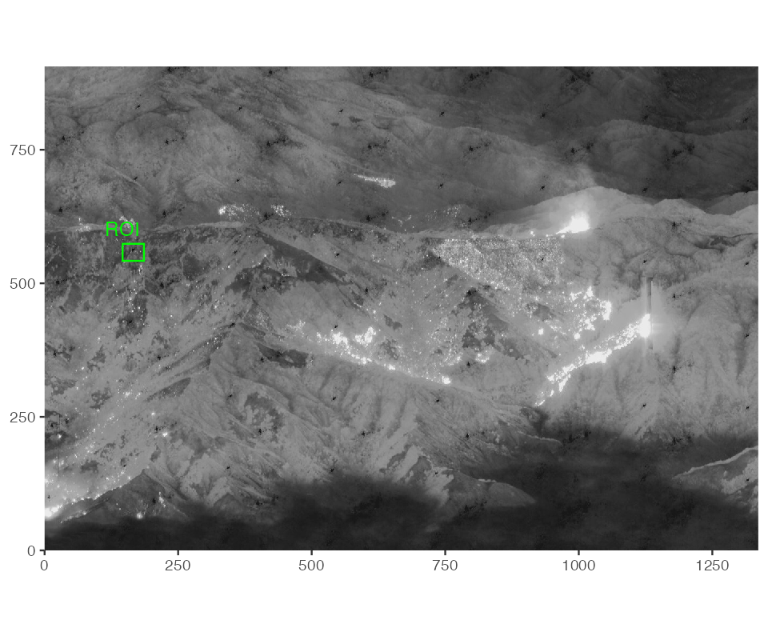
〈シナリオ B〉 ズームした画像が得られ、pic_zoom に保存されている。この画像にて、識別器によって生存者が検出され、座標値(u, v)と ID が tracked_tgt(7行)に保存されている。
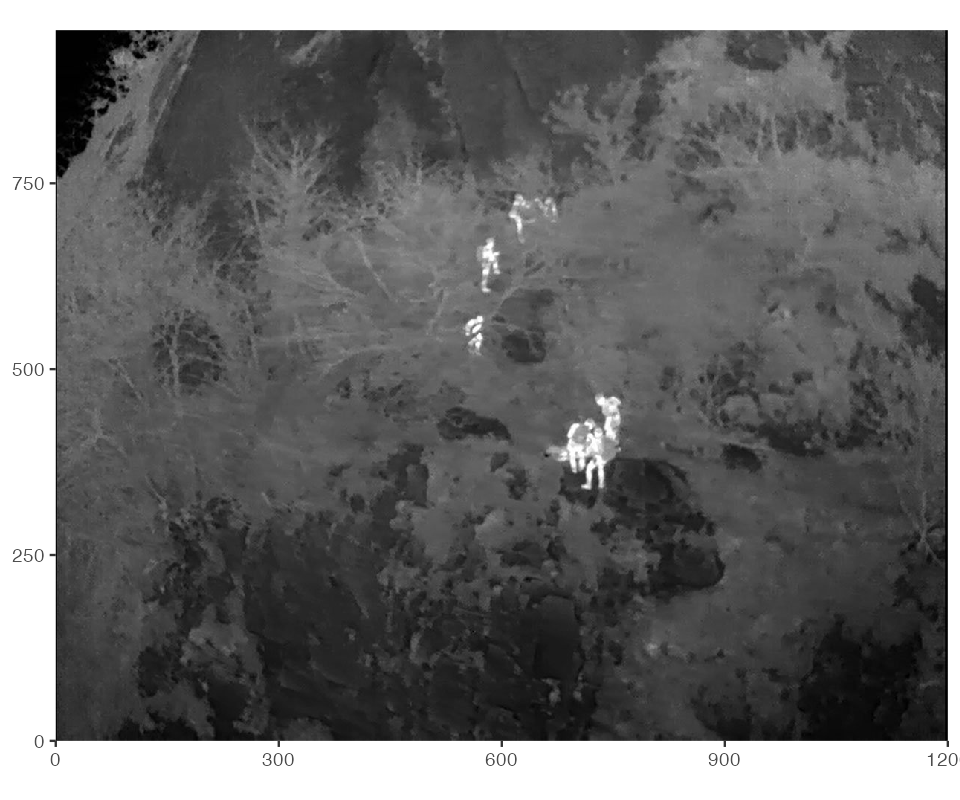
■ 設問
box <- geom_rect(data = tracked_tgt,
aes(xmin = u - 30, ymin = v - 30,
xmax = u + 30, ymax = v + 30),
col = rgb(0, 1, 0, alpha = 0.7), fill = NA)
id <- geom_text(data = tracked_tgt, aes(x = u - 50, y = v + 50),
label = tracked_tgt$id, col = rgb(0, 1, 0, alpha = 0.7))
S5B <- pic_zoom + box + id + labs(x = NULL, y = NULL)
print(S5B)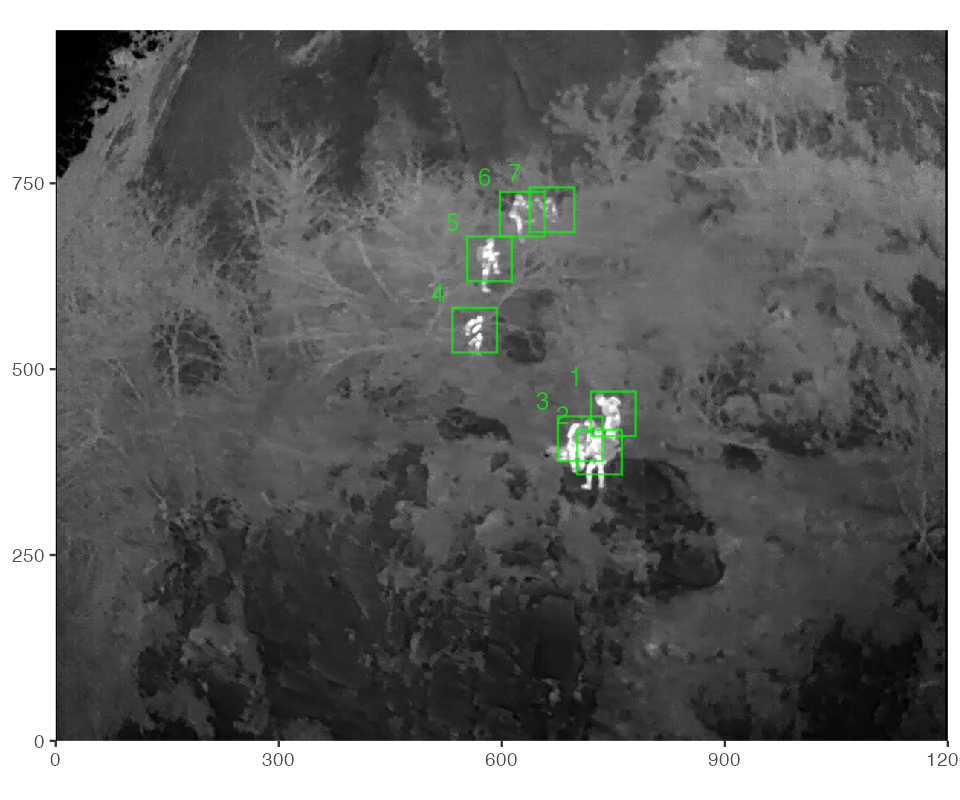
使用する変数:ecg_data
救助ヘリで移動中に、救助された生存者のうち1名の容体が悪化した。さらに火山による磁気障害によって、救難ヘリ内の心電図のディスプレイが正しく映像を映せなくなった。心電図の数値情報は正しく得られており、ecg_data(sec, mV)に保存されている。そこで、急ぎこの情報をもとに心電図を作成する。
■ 設問
bgcolor <- "black"
linecolor <- hsv(0.5, 1, 1, alpha = 0.5) # シアン系
gridcolor <- hsv(0, 0, 1, alpha = 0.2) # 薄い白
S6 <- ggplot() +
geom_line(data = ecg_data, aes(x = sec, y = mV), col = linecolor) +
theme(
text = element_text(color = "white"),
plot.background = element_rect(colour = bgcolor, fill = bgcolor),
panel.background = element_rect(colour = bgcolor, fill = bgcolor),
panel.grid.major = element_line(colour = gridcolor),
panel.grid.minor = element_line(colour = gridcolor),
axis.text = element_text(colour = "white")
)
print(S6)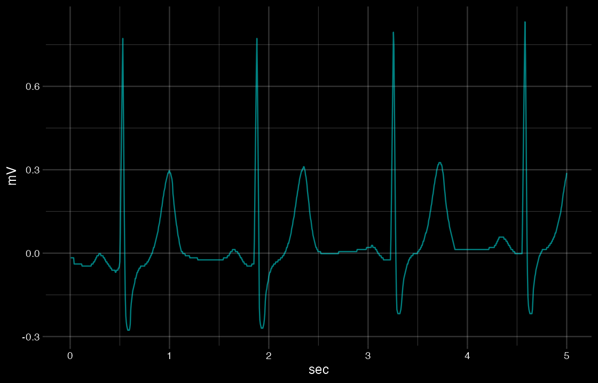
使用する変数:hospital_data
容体の悪化した生存者について急ぎ病院へ搬送する必要が生じた。病院データ共有システムから、近郊でのヘリコプター着陸が可能な病院一覧およびそこでの患者受け入れ状況が得られ、hospital_data に保存されている。
■ 設問
# 設問3の指針：可読性を高める処理があれば加点。
# 例：病院名を縦軸側に回すと読みやすい → coord_flip()
S7 <- ggplot() +
geom_bar(stat = "identity",
aes(x = name, fill = status, y = number),
data = hospital_data) +
scale_fill_manual(values = c(available = "blue", in_use = "gray")) +
xlab("Hospitals") + ylab("num. of beds") +
coord_flip()
print(S7)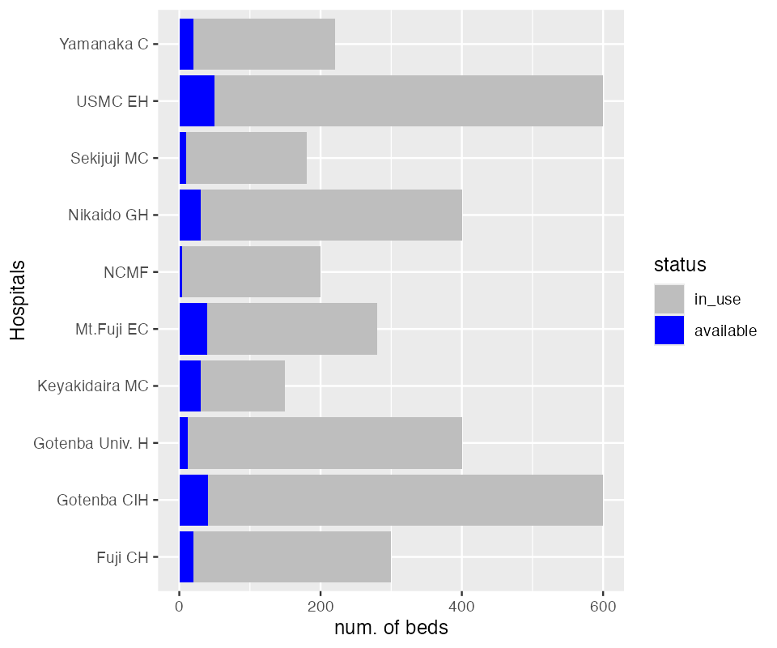
# 文脈上知りたいのは「空き病床の多い病院」。空き数順に並べ替え、
# 最多の病院を最下部（数値目盛り側）に置いて読み取りやすくする。
wide_data <- hospital_data %>%
pivot_wider(names_from = "status", values_from = "number")
sorted_data <- wide_data[order(wide_data$available, decreasing = TRUE), ]
hospital_data$name <- factor(hospital_data$name, levels = sorted_data$name)
S7_advanced <- ggplot() +
geom_bar(stat = "identity",
aes(x = name, fill = status, y = number),
data = hospital_data) +
scale_fill_manual(values = c(available = "blue", in_use = "gray")) +
xlab("Hospitals") + ylab("num. of beds") +
coord_flip()
print(S7_advanced)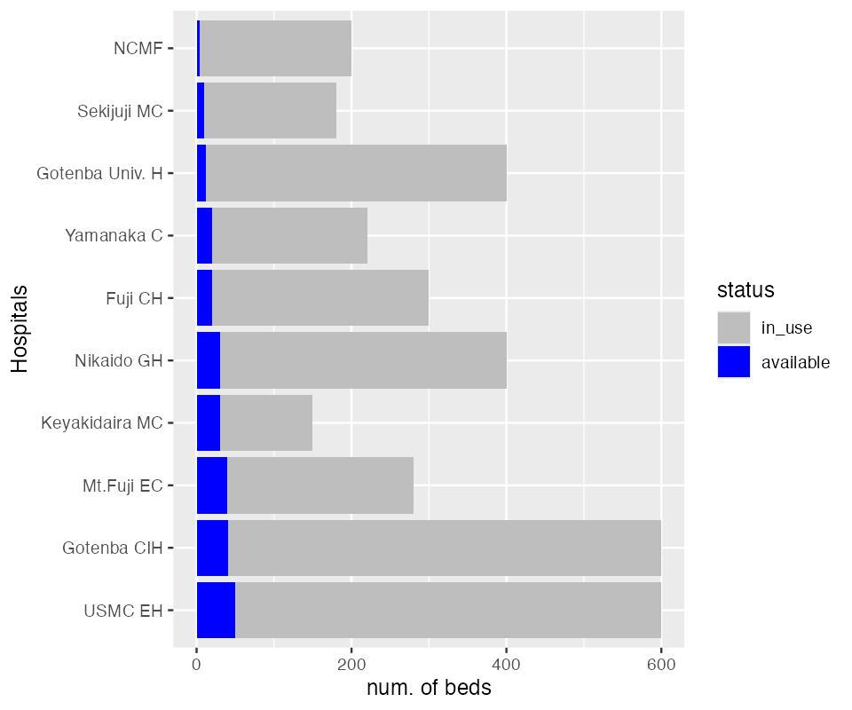
試験後に赤字で補足されていた不備を、このページでは本文に反映済み
このページの出力はすべて R 4.4.1 で実際に実行して得たものです。基礎から始めるなら可視化サンプル(airquality)、環境構築は RStudio 導入へ。他の資料へは 資料一覧 から移動できます。